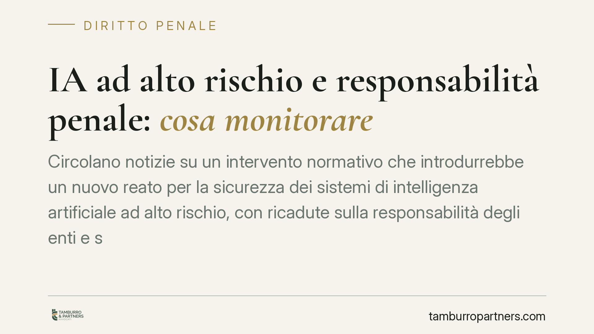

IA ad alto rischio e responsabilità penale: cosa monitorare
Circolano notizie su un intervento normativo che introdurrebbe un nuovo reato per la sicurezza dei sistemi di intelligenza artificiale ad alto rischio, con ricadute sulla responsabilità degli enti e sul contenzioso civile. Allo stato non risultano riscontri su fonti ufficiali. Vale però la pena capire quali scenari si prospettano e come prepararsi con prudenza.

Una premessa doverosa
È circolata la notizia di un decreto legislativo che introdurrebbe un nuovo reato in materia di sicurezza dei sistemi di intelligenza artificiale ad alto rischio, un nuovo reato presupposto ai fini della responsabilità degli enti e regole più severe sul nesso causale nel contenzioso civile.
Una precisazione è d'obbligo. Alla data di redazione di questo contributo, il provvedimento indicato (che alcune fonti citano come "d.lgs. 160/2026"), il correlato nuovo articolo del codice penale e la nuova voce nel catalogo dei reati presupposto del D.lgs. 231/2001 non risultano riscontrabili su fonti ufficiali (Gazzetta Ufficiale, Normattiva). Trattiamo quindi la materia al condizionale, come scenario possibile e non come diritto vigente. Chi si occupa di compliance non può fondare scelte operative su testi non confermati.
Il quadro di riferimento certo
Il riferimento oggi stabile è il Regolamento (UE) 2024/1689, il cosiddetto AI Act, che classifica i sistemi di intelligenza artificiale per livello di rischio e impone obblighi rafforzati per quelli "ad alto rischio" (ad esempio in ambito sanitario, occupazionale, giudiziario o infrastrutturale). Il Regolamento prevede requisiti di gestione del rischio, tracciabilità, sorveglianza umana e sicurezza.
Sul piano penale interno, l'ipotesi di un nuovo reato si collocherebbe idealmente nel solco dell'art. 437 c.p., che punisce la rimozione od omissione dolosa di cautele contro infortuni sul lavoro o disastri. La logica è nota: sanzionare chi non predispone o altera le misure di sicurezza. L'eventuale estensione a un sistema di IA che governa processi critici seguirebbe questa impostazione, ma resta – lo ripetiamo – da confermare.
Gli scenari prospettati
Secondo le indiscrezioni, tre sarebbero i fronti di intervento.
Fronte penale. Un nuovo reato colpirebbe l'omessa adozione delle misure di sicurezza e l'alterazione dei sistemi di IA ad alto rischio. Il numero dell'articolo del codice penale che viene indicato in alcune sintesi non è verificabile: in mancanza di conferma, va trattato come "un nuovo reato eventuale", non come norma numerata e vigente.
Fronte 231. Il nuovo reato figurerebbe tra quelli che generano responsabilità amministrativa dell'ente ai sensi del D.lgs. 231/2001. Anche qui la numerazione della nuova voce (talora indicata come "25-vicies") non è confermabile sulla sequenza attuale degli articoli 25 del decreto e non va data per certa.
Fronte civile. Si prospetta un alleggerimento della prova per chi agisce per il danno: in sostanza, un nesso causale presunto tra malfunzionamento del sistema e danno, con inversione dell'onere della prova a carico dell'impresa, e la possibilità di azione diretta contro l'assicuratore. Se confermato, sarebbe un cambiamento significativo: non spetterebbe più al danneggiato dimostrare il legame tra difetto e danno, ma all'impresa provare di aver agito correttamente.
Implicazioni pratiche
Per imprese, fornitori e utilizzatori di sistemi di IA ad alto rischio, e per gli enti soggetti al D.lgs. 231/2001, l'insieme di questi scenari – se si tradurrà in norme – amplierebbe l'area di rischio penale e patrimoniale.
L'inversione dell'onere della prova, in particolare, sposterebbe il baricentro della difesa: diventerebbe decisivo poter documentare, ex post, di aver adottato e mantenuto le cautele richieste. La tracciabilità delle decisioni tecniche e organizzative sarebbe l'elemento dirimente in un eventuale contenzioso.
Nel frattempo, gli obblighi dell'AI Act sono già una base concreta di lavoro, a prescindere dall'esito del provvedimento interno.
Cosa fare in concreto
- Verificare su fonti ufficiali (Gazzetta Ufficiale, Normattiva) lo stato effettivo del provvedimento prima di assumere qualsiasi decisione fondata su di esso.
- Mappare i sistemi di IA impiegati e classificarli secondo i criteri di rischio dell'AI Act (Reg. UE 2024/1689).
- Documentare in modo tracciabile le misure di sicurezza adottate: valutazioni del rischio, sorveglianza umana, log di funzionamento.
- Verificare l'adeguatezza del Modello 231 e valutarne l'aggiornamento non appena il quadro dei reati presupposto sarà confermato.
- Riesaminare le coperture assicurative, in particolare rispetto a danni riconducibili a malfunzionamenti dei sistemi automatizzati.
Conclusione
Gli scenari descritti, se confermati, inciderebbero in modo rilevante sulla gestione del rischio d'impresa. Ma la prudenza impone di distinguere le notizie dai testi vigenti. È opportuno monitorare l'iter e verificare ogni dato su fonte ufficiale prima di intervenire sull'assetto organizzativo.
Contributo informativo a cura di Tamburro & Partners - Avv. Giuseppe Tamburro. Non costituisce parere legale.
Ogni condominio ha una storia a sé.
Se gestisci un'amministrazione e vuoi un confronto su una specifica questione condominiale, scrivi allo studio. Ti rispondiamo entro un giorno lavorativo.